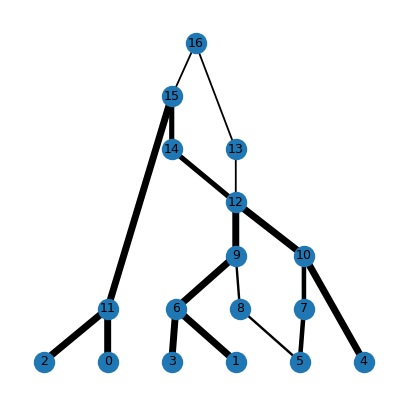

ARGs as tree sequences#
Note
This tutorial is a work in progress.
At its heart, a tskit tree sequence consists of a list of
Nodes, and a list of Edges that connect
those nodes. Therefore a succinct tree sequence is equivalent to a
mathematical graph,
which is additionally annotated with genomic positions such that at each
position, a path through the edges exists which defines a tree. This graph
interpretation of a tree sequence is tightly connected to the concept of
an “ancestral recombination graph” (or ARG).
The term “ARG” is often used to refer to
a structure consisting of nodes and edges that describe the genetic genealogy of a set
of sampled chromosomes which have evolved via a process of genetic inheritance combined
with recombination. ARGs may contain not just nodes corresponding to genetic
coalescence, but also additional nodes that correspond e.g. to recombination events
(see ARG nodes, below). We call these “full ARGs”, and this tutorial aims
to show you how tskit can be used to store and analyse them.
As an example, we will generate a full ARG using the process
msprime.sim_ancestry() with the record_full_arg=True option, as described
in the msprime docs:
import msprime
parameters = {
"samples": 3, # Three diploid individuals == six sample genomes
"sequence_length": 1e4,
"recombination_rate": 1e-7,
"population_size": 1e3,
"random_seed": 333,
}
ts_arg = msprime.sim_ancestry(**parameters, record_full_arg=True, discrete_genome=False)
# NB: the strict Hudson ARG needs unique crossover positions (i.e. a continuous genome)
print('"Full ARG" simulated under the Hudson model:')
print(
f" stored in a tree sequence with {ts_arg.num_nodes} nodes and "
f" {ts_arg.num_edges} edges which form {ts_arg.num_trees} local trees"
)
"Full ARG" simulated under the Hudson model:
stored in a tree sequence with 17 nodes and 18 edges which form 3 local trees
Like any tree sequence, we can also add mutations to the ARG to generate genetic variation:
import numpy as np
mu = 1e-7
ts_arg = msprime.sim_mutations(ts_arg, rate=mu, random_seed=888)
print(" Sample node: " + " ".join(str(u) for u in ts_arg.samples()))
for v in ts_arg.variants():
print(f"Variable site {v.site.id}:", np.array(v.alleles)[v.genotypes])
Sample node: 0 1 2 3 4 5
Variable site 0: ['T' 'C' 'T' 'C' 'C' 'C']
Variable site 1: ['C' 'C' 'C' 'C' 'G' 'C']
Variable site 2: ['T' 'T' 'G' 'T' 'T' 'T']
As well as the standard Visualization of the tree sequence as a set of local trees, we can also plot this tree sequence in network form:
Todo
Incorporate something into tsviz
like the draw function from
https://github.com/tskit-dev/what-is-an-arg-paper/blob/main/argutils/viz.py, and
use that to plot a graph-based viz of this ts, e.g.
import argutils
from matplotlib import pyplot as plt
fig, ax = plt.subplots(1, 1, figsize=(5, 5), sharey=True)
ts2 = argutils.viz.label_nodes(ts_arg)
_ = argutils.draw(ts_arg, ax, draw_edge_widths=True)

(this PNG file can be removed once the code to autogenerate it is incorporated)
Background semantics#
Two features distinguish the genealogical structure stored in a tskit tree sequence
from many other ARG formats. Firstly, the annotations that define which genomic regions
are inherited are stored on edges (via the left and a right
properties), rather than on the graph nodes, as is sometimes the case. Secondly, the
nodes in a tree sequence correspond to genomes, rather that specific events such as
coalescence or recombination.
Technically therefore, ARGs stored by tskit are edge-annotated
“genome ARGs” (gARGs). This results in a flexible format that can describe
ancestral graphs created by many biological processes, including ones that deviate from
the neutral coalescent-with-recombination (CwR), for example ancestries incorporating
gene conversion, or that have evolved under a Wright-Fisher model of inheritance,
in which parents can have more than two children, and coalescence and recombination
can occur in the same generation. The focus on genomes rather than events also
makes it possible to accurately encode ancestry without having to pin down exactly when
the relevant ancestral events took place (TODO: cite our ARG paper).
ARG nodes#
Simplified tree sequences, such those normally produced by
msprime, can be though of as a “simplified ARGs” that contain only nodes that
correspond to a coalescence somewhere in the genome. They are sufficient to capture the
structure of local trees and the correlations between them; this is usually all that is
needed for analysis. However they do not contain complete information about the timings
and topological operations associated with recombination events. This extra information
can be useful for a few specific purposes:
Assuming each recombination happens at a unique position, precise information about which lineages are involved in recombination allows you to work out the exact tree editing, or subtree-prune-and-regraft (SPR) moves required to change one local tree into another as you move along the genome.
Information about recombination and common ancestor events can be used to calculate the likelihood of an full ARG under a specific model of evolution (most commonly, the neutral coalescent with recombination, or CwR, as modelled e.g. by Hudson (1983))
Note, however, that it can be impossible to infer non-coalescent nodes from genetic variation data with any degree of precision.
Unary tree nodes#
To store additional information about non-coalescent nodes, a full ARG stored in tree sequence form contains extra unary nodes (i.e. nodes with only one child). In particular, it can contain recombination nodes which record the timing of recombination events, and non-coalescent-common-ancestor nodes which record cases where lineages share a common ancestor but in which genetic material does not coalesce.
The example we have been using is small, and contains just 2 recombination events
(associated with 2 breakpoints). In this instance the only extra nodes happen to be
recombination nodes. Msprime only simulates full ARGs in which a recombination event
results in a single crossover, and it records this by storing the two genomes
immediately prior to gamete formation (the genomes that come together to form a
recombinant). In other words, two extra nodes are created for each
recombination: one that captures transmission to the left of the crossover and another,
at an identical time, to the right. These are identified by the
NODE_IS_RE_EVENT flag, and are are highlighed in red
below:
# Plot the recombination nodes in red, with a horizontal line at the time of occurrence,
# and only label nodes that are samples or recombination nodes.
samples = set(ts_arg.samples())
re_nodes = set(nd.id for nd in ts_arg.nodes() if nd.flags & msprime.NODE_IS_RE_EVENT)
re_times = [int(nd.time) for nd in ts_arg.nodes() if nd.flags & msprime.NODE_IS_RE_EVENT]
style = ".y-axis .grid {stroke: #ff000033} .mut .sym {stroke: goldenrod}"
for u in re_nodes:
style += f".n{u} > .sym {{fill: red}}"
ts_arg.draw_svg(
size=(600, 300),
y_axis=True,
y_ticks=re_times,
y_gridlines=True,
style=style,
mutation_labels={},
node_labels={u: u for u in samples | re_nodes}
)
The location of the recombination nodes imply that the recombination events happened ~588 and ~59 generations ago. The older one, at 588 generations, involved node 13 (to the left of position 2601.01) and node 14 (to the right). As well as narrowing down the recombination event to a specific point in time, the position of these two nodes tells us that the SPR to convert the first into the second tree involves pruning the branch above samples 1, 3, 4, and 5 and regrafting it onto the branch above samples 0 and 2, rather than the other way around. Note that this particular recombination does not change the topology of the tree, but simply the branch lengths.
The recombination event 59 generations ago involved nodes 7 and 8, with the crossover ocurring at position 6516.94. The SPR operation which converts the middle tree into the last one involves pruning the branch above sample node 5 and regrafting it onto the branch above the common ancestor of 1 and 3. In this case, the recombination has led to a change in topology, such that the closest relative of 5 is node 4 from positions 0 to 6516.94, but 1 and 3 from positions 6516.94 to 10,000.
Note
Many ARG representations associate each recombination event with a single node rather
than two. It is possible to represent this in tskit, but in such an ARG, the
edge annotations do not contain enough information to calculate the standard
likelihood under the Hudson model (see Calculating likelihoods).
Todo
Explain in plain language why 2 RE nodes are needed to calculate the likelihood under the Hudson CwR: see e.g. https://github.com/tskit-dev/msprime/issues/1942#issuecomment-1013718650
One suggested way to do this is to show how there is not enough information in a 1-RE-node plot to fully recreate the 2-RE-node equivalent. I think this is because we lose information about the order of breakpoints when multiple breakpoints occur in the same region of hidden material.
Note also that this approach only applies to a model in which a single crossover occurs per chromosome.
Calculating likelihoods#
Because the ARG above was generated under the standard Hudson model (e.g. neutral
evolution in a large population with unique recombination breakpoints along a continuous
genome), we can calculate its likelihood under that model, for a given recombination
rate and population size, using the msprime.log_arg_likelihood() method.
Note however, that the simulation was run with the default ploidy level of 2, so that the
msprime.sim_ancestry() method assumed the population_size parameter was
the diploid population size. The log_arg_likelihood method requires Ne, the haploid
population size, which is twice as large, so the likelihood is calculated as follows:
print(
"Log likelihood of the genealogy under the Hudson model:",
msprime.log_arg_likelihood(
ts_arg,
recombination_rate=parameters["recombination_rate"],
Ne=parameters["population_size"] * 2 # Number of *haploid* genomes
)
)
Log likelihood of the genealogy under the Hudson model: -93.57791165409245
It is worth noting that we fully simplify the tree above, we remove all the unary nodes and therefore lose information about the timings of recombination and non-coalescent common ancestry, but we still keep the local trees intact:
ts = ts_arg.simplify()
ts.draw_svg(
size=(600, 300),
y_axis=True,
node_labels={u: u for u in ts.samples()},
mutation_labels={},
style=".mut .sym {stroke: goldenrod}",
y_ticks=[t*500 for t in range(4)]
)

Because of this loss of information, the ARG likelihood cannot be calculated from the simplified tree sequence. We can still, however, calculate the mutation likelihood (i.e. the likelihood of the observed pattern of mutations, given the genealogy) because the topology and branch lengths of the local trees remain unchanged after simplification:
print("Log likelihood of mutations given the genealogy:")
print(' "full" ARG:', msprime.log_mutation_likelihood(ts_arg, mutation_rate=mu))
print(" simplified:", msprime.log_mutation_likelihood(ts, mutation_rate=mu))
Log likelihood of mutations given the genealogy:
"full" ARG: -33.204860594400216
simplified: -33.204860594400216
Recording all nodes is expensive#
Many extra nodes are required to store full information about ancestrally relevant recombination. In fact, as the sequence length increases, these non-coalescent nodes come to dominate the tree sequence (which is one reason they are not included by default). We can calculate the percentage of non-coalescent nodes by comparing a full ARG with its simplified version:
large_sim_parameters = parameters.copy()
large_sim_parameters["sequence_length"] *= 1000
large_ts_arg = msprime.sim_ancestry(**large_sim_parameters, record_full_arg=True)
large_ts = large_ts_arg.simplify()
print(
"Non-coalescent nodes take up "
f"{(1-large_ts.num_nodes/large_ts_arg.num_nodes) * 100:0.2f}% "
f"of this {large_ts.sequence_length/1e6:g} megabase {large_ts.num_samples}-tip ARG"
)
Non-coalescent nodes take up 99.32% of this 10 megabase 6-tip ARG
This is one of the primary reasons that nodes which are never associated with coalescent events are excluded by default in simulation software such as msprime and SLiM.
Note
As well as ancestrally relevant nodes, the original (mathematical) ARG formulation by Griffiths (1991) includes recombination nodes that are not ancestral to the samples. This leads to a graph with an vastly larger number of nodes than even the ARGs simulated here, and using such structures for simulation or inference is therefore infeasible.
Working with the tree sequence graph#
All tree sequences, including, but not limited to full ARGs, can be treated as directed (acyclic) graphs. Although many tree sequence operations operate from left to right along the genome, some are more naturally though of as passing from node to node via the edges, regardless of the genomic position of the edge. This section describes some of these fundamental graph operations.
Graph traversal#
The standard edge iterator, TreeSequence.edge_diffs(), goes from left to
right along the genome, matching the TreeSequence.trees() iterator. Although
this will visit all the edges in the graph, these will not necessarily be grouped
by the node ID either of the edge parent or the edge child. To do this, an alternative
traversal (from top-to-bottom or bottom-to-top of the tree sequence) is required.
To traverse the graph by node ID, the TreeSequence.nodes() iterator can be
used. In particular, because parents are required to be strictly older than their
children, iterating through nodes using order="timeasc" will ensure that children
are always visited before their parents (similar to a breadth-first or “level order”
search). However, using TreeSequence.nodes() is inefficient if you also
want to access the edges associated with each node.
The examples below show how to efficiently visit the all the edges in a tree sequence, grouped by the nodes to which they are connected, while also ensuring that children are visited before parents (or vice versa).
Traversing parent nodes#
The most efficient graph traversal method visits all the parent nodes in the tree sequence, grouping edges for which that node is a parent. This is simple because edges in a tree sequence are ordered firstly by the time of the parent node, then by node ID.
import itertools
import operator
def edges_by_parent_timeasc(ts):
return itertools.groupby(ts.edges(), operator.attrgetter("parent"))
for parent_id, edges in edges_by_parent_timeasc(ts):
t = ts.node(parent_id).time
children = {e.child for e in edges}
print(f"Node {parent_id} at time {t} has these child node IDs: {children}")
Node 6 at time 56.0454802286223 has these child node IDs: {1, 3}
Node 7 at time 120.7850821708138 has these child node IDs: {5, 6}
Node 8 at time 142.86643656492956 has these child node IDs: {4, 5}
Node 9 at time 236.7237255340037 has these child node IDs: {0, 2}
Node 10 at time 272.05118690557765 has these child node IDs: {8, 4, 6, 7}
Node 11 at time 610.912738605865 has these child node IDs: {9, 10}
Node 12 at time 1382.4658244607965 has these child node IDs: {9, 10}
This visits children before parents. To visit parents before children, you can
simply use reversed(ts.edges()) rather than ts.edges() within the
groupby function. Note that terminal nodes (i.e. which are either isolated
or leaf nodes in all local trees) are not visited by this function: therefore
the method above will omit all the terminal sample nodes.
Traversing child nodes#
Sometimes you may wish to iterate over all the edges for which a node is a child (rather than a parent). This can be done by sorting the edges by child node time (then child node id). This is a little slower, but can be done relatively efficiently as follows:
import itertools
import operator
import numpy as np
def edges_by_child_timeasc(ts):
# edges sorted by child node time, then child node id using np.lexsort
it = (ts.edge(u) for u in np.lexsort((ts.edges_child, ts.nodes_time[ts.edges_child])))
return itertools.groupby(it, operator.attrgetter("child"))
for child_id, edges in edges_by_child_timeasc(ts):
t = ts.node(child_id).time
parents = {e.parent for e in edges}
print(f"Node {child_id} at time {t} has these parent node IDs: {parents}")
Node 0 at time 0.0 has these parent node IDs: {9}
Node 1 at time 0.0 has these parent node IDs: {6}
Node 2 at time 0.0 has these parent node IDs: {9}
Node 3 at time 0.0 has these parent node IDs: {6}
Node 4 at time 0.0 has these parent node IDs: {8, 10}
Node 5 at time 0.0 has these parent node IDs: {8, 7}
Node 6 at time 56.0454802286223 has these parent node IDs: {10, 7}
Node 7 at time 120.7850821708138 has these parent node IDs: {10}
Node 8 at time 142.86643656492956 has these parent node IDs: {10}
Node 9 at time 236.7237255340037 has these parent node IDs: {11, 12}
Node 10 at time 272.05118690557765 has these parent node IDs: {11, 12}
To visit parents before children, the lexsort can take the negated
-ts.nodes_time rather than simply using ts.nodes_time. Note that nodes
which are never children of an edge are not visited by this algorithm. Such
nodes are either isolated or a
{ref}`root<sec_data_model_tree_roots> in each local tree.
Misc#
Todo
Add extra content as per tskit-dev/tutorials#43
Other software#
Todo
Show how ARGweaver output can be converted to tskit form.
Todo
Show how KwARG output can be converted to tskit form.
Todo
Implement conversion between the 2 RE node version and the 1 RE node version